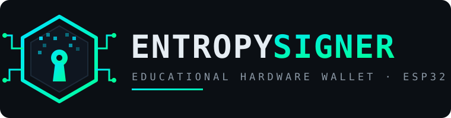

secp256k1.
LDR ──► ADC1_CH0 ──► LDR DATA (128x16b) ─┐
├──► SHA-256 (extractor) ──► 256 bits de entropía
ESP32 TRNG (SAR ADC noise) ──────┘ │
▼
24 palabras mnemónicas ◄── 264 bits (24x11b) ◄── SHA-256 Checksum (8b) ─┘
│
▼
PBKDF2-HMAC-SHA512 (2048 iteraciones) ──► 512-bit Seed
│
▼
BIP-32 Master Key (secp256k1)
│
┌────────────────────────┴────────────────────────┐
▼ ▼
Bitcoin m/44'/0'/0'/0/0 Ethereum m/44'/60'/0'/0/0
P2PKH Base58Check ("1...") Keccak-256 + EIP-55 ("0x...")
│ │
└─────────────────► DISPLAY & QR ◄────────────────┘
| Fuente | H (Shannon) | H_MCV (§6.3.1) | H_Lag (§6.3.8) | Min-Entropía H_I | Diagnóstico |
|---|---|---|---|---|---|
| ESP32 TRNG | 7.999 bits | 7.731 bits | 7.823 bits | 7.353 bits / byte | Entropía completa (IID sano) |
| LDR Normal | 6.372 bits | 5.848 bits | 3.155 bits | 3.155 bits / muestra | Autocorrelación detectable (Lag 1-10) |
| LDR Ataque (Luz Fija) | 1.733 bits | 0.846 bits | 0.297 bits | 0.297 bits / muestra | Repetition Count Fails (Atascado) |
| SHA256(Contador) | 8.000 bits | 7.724 bits | 7.939 bits | 7.319 bits (Pseudo) | Pasa tests pero entropía real = 0 |
$\text{Data} = \mathtt{0x00} \parallel k_{\text{padre}} \parallel i$
✓ Si una clave hija se compromete, es matemáticamente imposible derivar la clave padre.
$\text{Data} = K_{\text{pub\_padre}} \parallel i$
Permite auditoría con Extended Public Keys (xpub) sin claves privadas.
0x00 (Mainnet).1...0x01).memset(): El compilador (GCC con -O2/-O3) aplica Dead Store Elimination. Si un buffer de claves sale de ámbito, el compilador descarta la limpieza porque "nadie volverá a leerla".
inline void secureMemzero(void* ptr, size_t len) {
if (ptr == nullptr) return;
volatile uint8_t* p = static_cast<volatile uint8_t*>(ptr);
while (len--) {
*p++ = 0; // Puntero volatile fuerza la escritura en bus de memoria
}
#if defined(__GNUC__)
// Barrera de compilador: clobber "memory" impide mover o elidir escrituras
__asm__ __volatile__("" : : "r"(ptr) : "memory");
#endif
}
test_foundation: reglas de pines y chip.test_crypto: vectores NIST SHA-256 y RIPEMD-160.test_bip39: 8 vectores oficiales Trezor.test_bip32: test vectors 1 y 2 de BIP-32.test_bitcoin: Base58, Base58Check y P2PKH.test_ethereum: Keccak-256 y vectores EIP-55.tools/verification/verify_cross.py.BOOT $\rightarrow$ IDLE (Gauge del sensor LDR) $\rightarrow$ GENERATING $\rightarrow$ BACKUP_WARNING $\rightarrow$ SHOW_MNEMONIC $\rightarrow$ SHOW_BTC / SHOW_ETH.
ricmoo/QRCode versión 3 (nivel de corrección M). Muestra exclusivamente las direcciones públicas de recepción para que el usuario pueda enviar fondos desde su teléfono sin cables ni conexiones de datos.